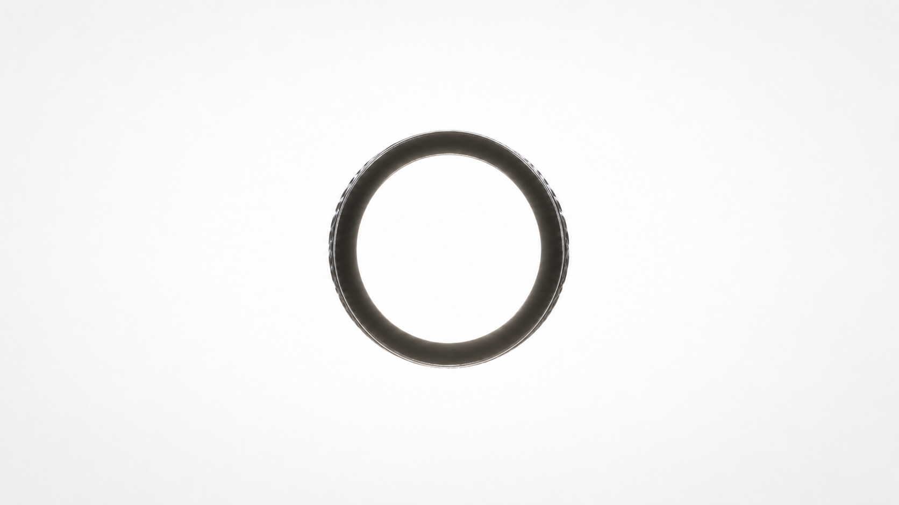

Acanto Selva
Life endures.

Rooted in resilience
shaped by movement
Loading object…
정적인 장식이 아니다
움직이는 구조, 착용되며 완성된다
First Impression
Guardian Ring
디테일
디테일
디테일
착용샷
Life endures.

Loading object…
정적인 장식이 아니다
움직이는 구조, 착용되며 완성된다
Guardian Ring